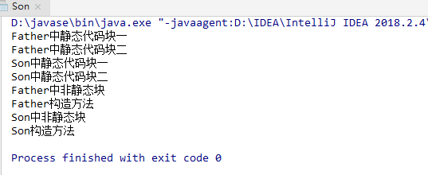

执行顺序：父类静态块-->子类静态块-->父类非静态块-->父类构造方法-->子类非静态块-->子类构造方法
当父类或子类中有多个静态方法时按在代码中的顺序执行
1 package day1015;
2
3 /**
4 * @author donleo
5 * date 2019-10-15
6 * code 代码执行顺序
7 */
8 public class Father {
9
10 static {
11 System.out.println("Father中静态代码块一");
12 }
13 static {
14 System.out.println("Father中静态代码块二");
15 }
16
17 public Father(){
18 System.out.println("Father构造方法");
19 }
20
21 {
22 System.out.println("Father中非静态块");
23 }
24
25 public static void main(String[] args){
26 Son son = new Son();
27 }
28 }
29
30 //子类继承父类
31 class Son extends Father{
32 static {
33 System.out.println("Son中静态代码块一");
34 }
35 static {
36 System.out.println("Son中静态代码块二");
37 }
38
39 public Son(){
40 System.out.println("Son构造方法");
41 }
42
43 {
44 System.out.println("Son中非静态块");
45 }
46 }代码执行结果：
